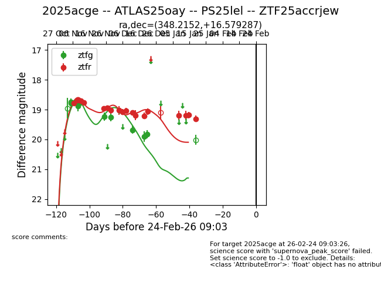
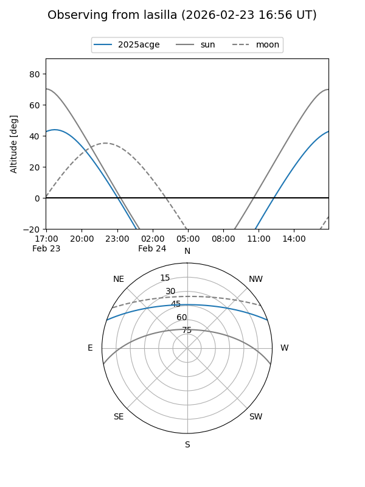
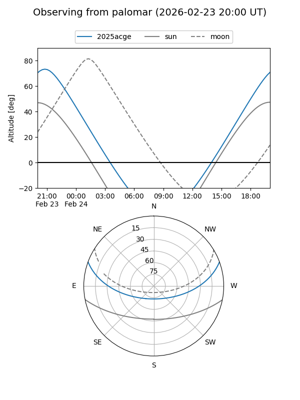
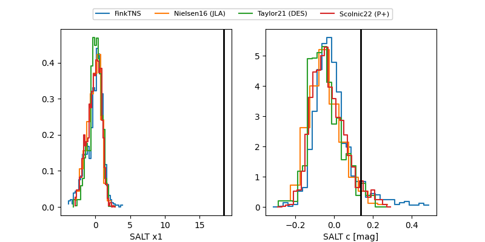

2025acge
Target 2025acge at 2026-01-21 03:41
Aliases and brokers:
FINK: link
Lasair: link
ALeRCE: link
TNS: link
YSE: link
alt names
ZTF25accrjew (ztf,fink_ztf)
2025acge (tns,yse)
ATLAS25oay (atlas)
PS25lel (panstarrs)
Coordinates:
equatorial (ra, dec) = 348.2152,+16.57929
equatorial (HMS+DMS) = 23:12:51.64,+16:34:45.43
galactic (l, b) = (91.3929,-40.17924)
Flags:
Photometry:
last ztfg=19.82, ztfr=19.31
10 ztfg, 18 ztfr detections
Lightcurve

Visibility


Additional plots
